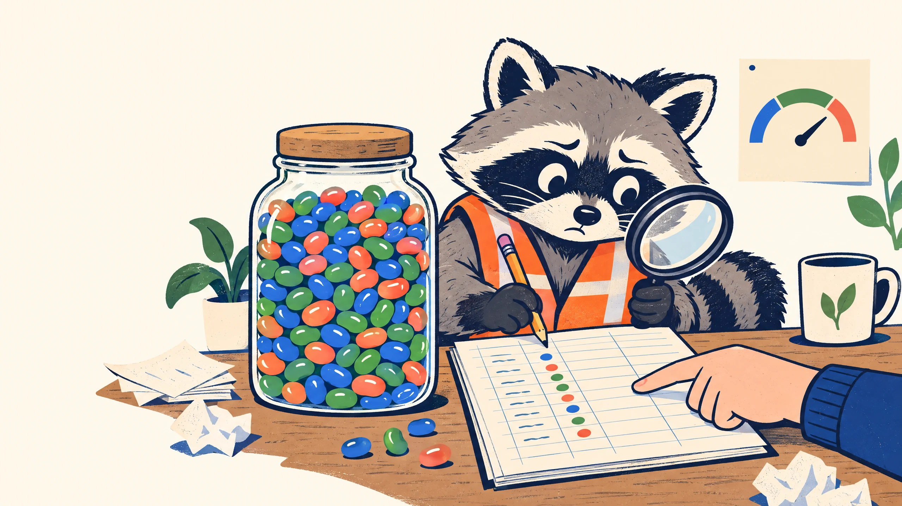
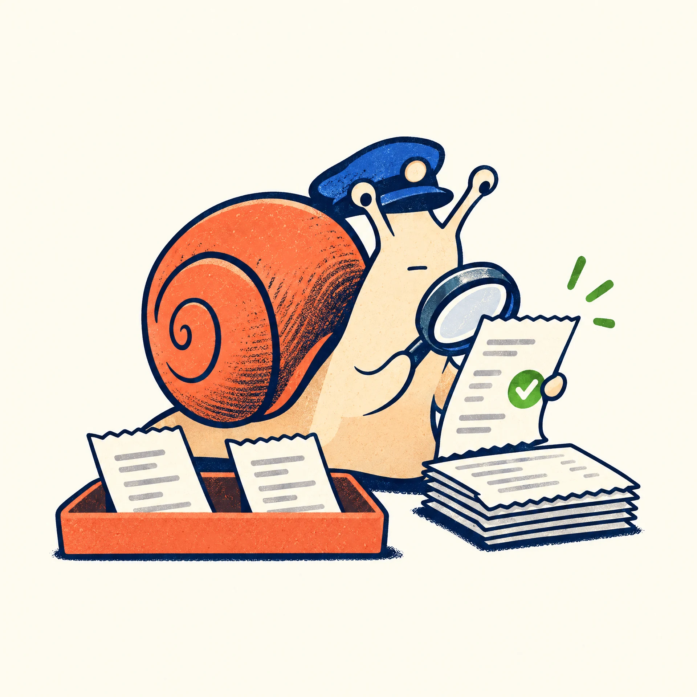

25%
SIGNAL / WATCH
Keep an eye on it.
Log and monitor. No automatic change.
A tiny offline CLI for token usage
Bring a manual usage pull. Compare it with a daily cut you actually approved. Get a clear signal—and keep every decision human.

01 / the protocol
Signals stack as usage crosses each threshold. They’re a report for a person—not a switch that changes anything.
SIGNAL / WATCH
Log and monitor. No automatic change.
SIGNAL / REVIEW
Review the remaining allowance.
SIGNAL / PAUSE_NONESSENTIAL
Pause non-essential work pending a human decision.
CAP / CAP_REACHED
At the approved daily cut: don’t authorize usage beyond it without a human decision.
02 / the boring bits that matter
Four requirements keep the numbers grounded in what a human approved and actually supplied.
WATCH at 25%, REVIEW at 50%, and PAUSE_NONESSENTIAL at 75%. At 100%, report CAP_REACHED.
Each date needs a valid APPROVED daily cut. The starter registry is empty on purpose; no limit is invented.
Supply the usage JSON yourself with pull_mode: MANUAL. The tool does not connect to services or fetch usage.
Only VERIFIED rows for the requested date count. Unverified, malformed, duplicate, and out-of-date rows are excluded and reported.
03 / three human-sized steps
Add the date and limit to config/daily_cuts.json. No APPROVED entry? It fails closed.
Use a JSON pull document. Keep record IDs unique; unverified rows can be included for review, but don’t count.
Get a JSON summary with verified totals, percentage, signals, and reasons for excluded rows.
$ PYTHONPATH=src python -m token_moderation.cli evaluate \
--date 2026-10-27 \
--cuts config/daily_cuts.json \
--pull examples/manual-pull.example.json \
--policy config/policy.json
04 / before you go
The CLI doesn’t change quotas, block requests, approve cuts, or take action on your behalf. It gives you a small, legible checkpoint and leaves the call to you.